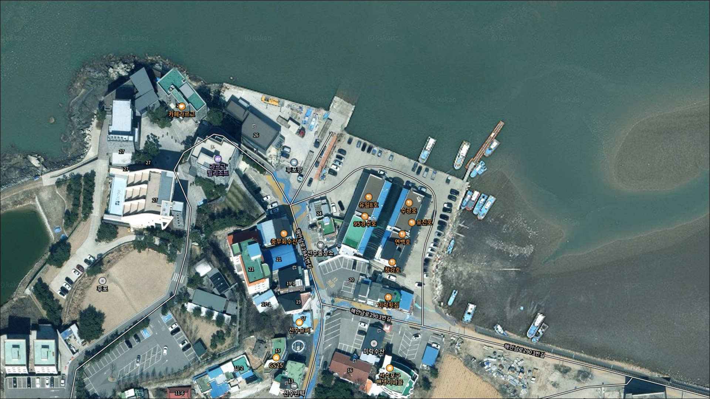
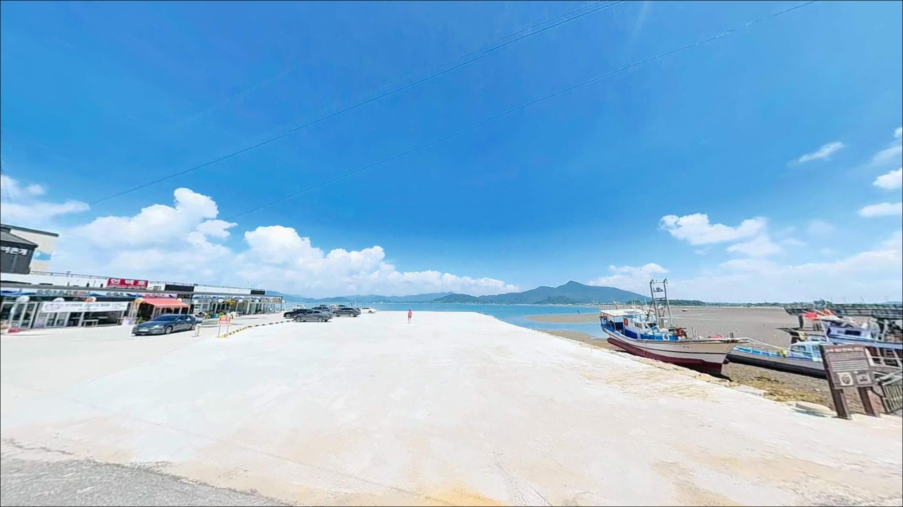
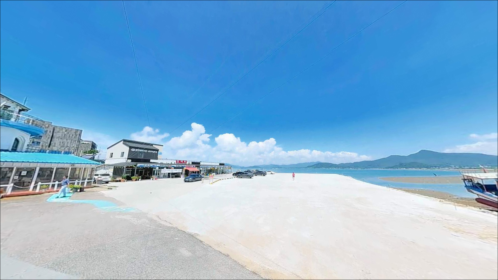
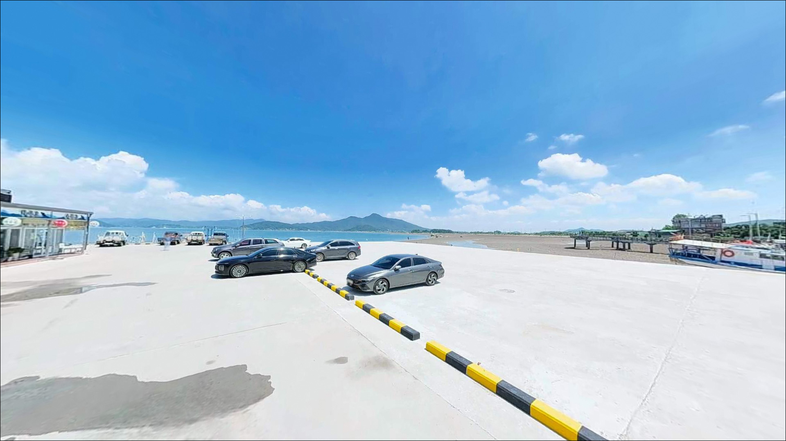
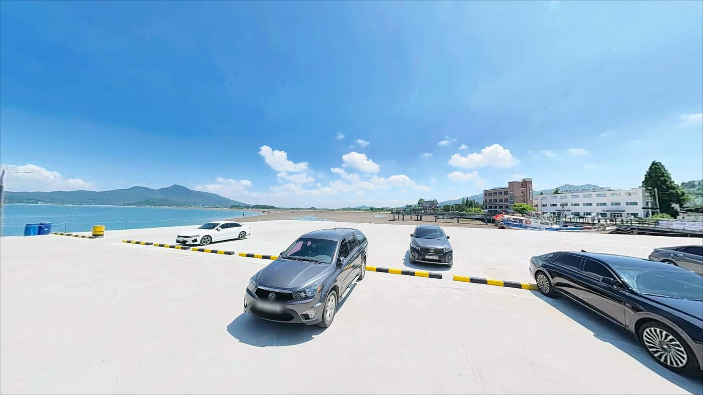
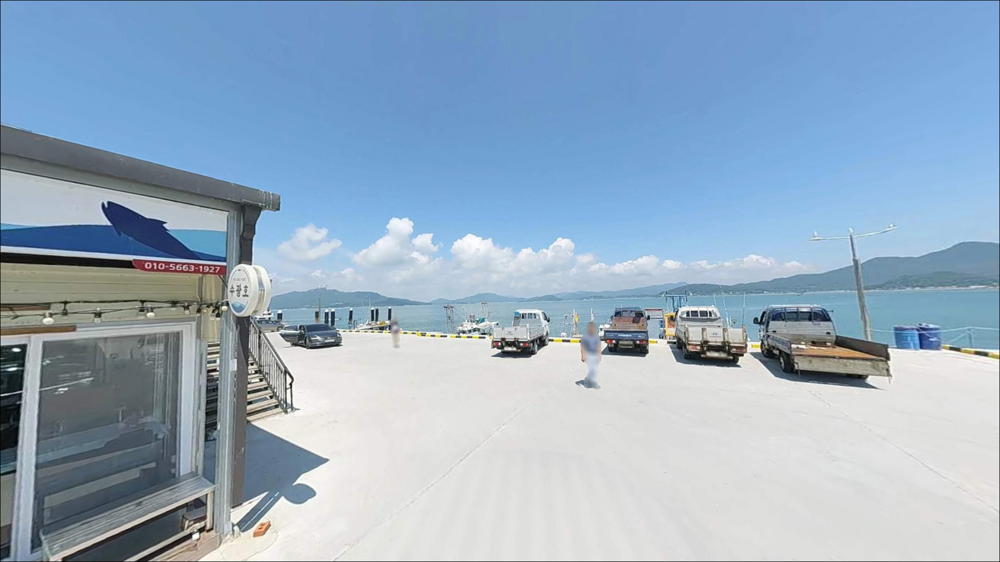
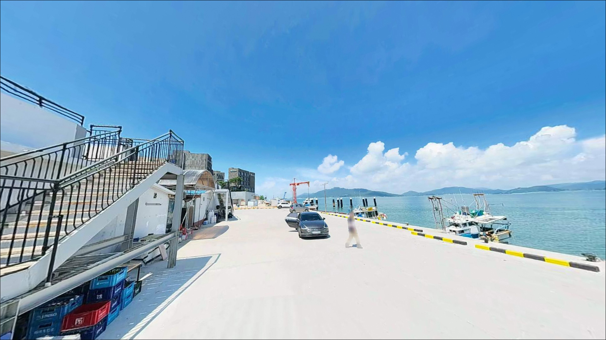
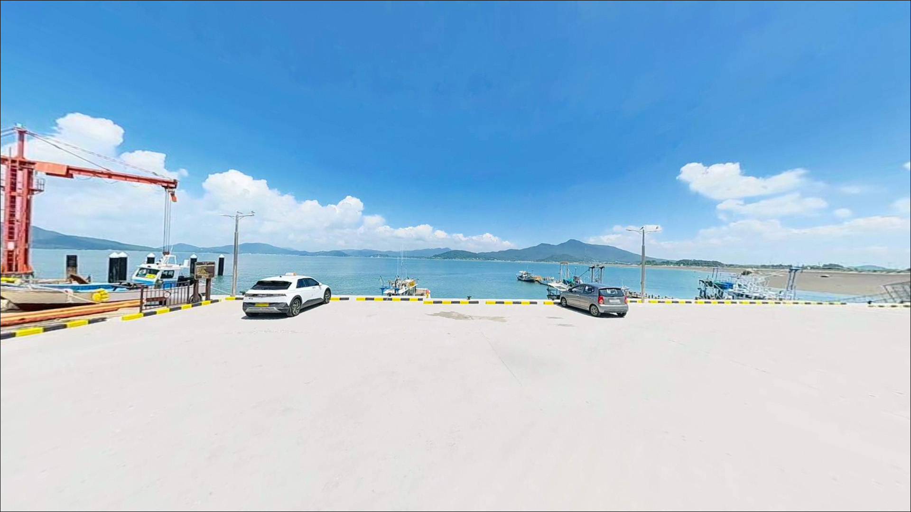
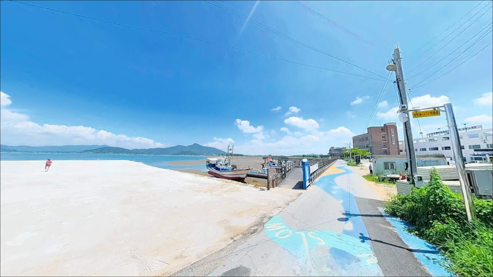

후포항, 강화도 인천 강화군 자연의 여백을 느낄 수 있는 차박, 낚시 명소
이 페이지에는 광고(제휴 링크 포함)가 있으며, 광고 링크를 통해 구매하면 운영자가 판매 수익 또는 수수료를 받을 수 있습니다. 포인트 사진: 카카오맵 스카이뷰·로드뷰. 이 페이지의 지도·사진 이미지는 카카오맵의 실제 서비스 이미지와 다를 수 있습니다.


포인트 안내
후포항
인천 강화군 화도면 내리 1825-14
물때 확인 없이 후포항에 도착하면
간조 시 갯벌이 드러난 바닥 앞에서
낚시 자리 자체가 성립하지 않습니다.
강화도 남서단 서해 갯벌 포구는
조수간만의 차가 크기로 알려진 해역으로,
만조 전후의 제한된 시간대에만
실질적인 낚시 여건이 열리는 구조입니다.
이 글은 후포항의 진입 여건, 지형 특성,
물때 기반 낚시 스타일 적합성,
차박 체류 조건을 정리합니다.
조황 단정이나 낚시 허용 확정은
이 글의 범위에 포함되지 않습니다.

1. 진입 동선과 포인트 접근성
후포항은 강화군 화도면 해안남로에서
해안남로2903번길을 통해 진입하는 구조입니다.
어촌뉴딜300사업으로 진입도로가 정비된 덕분에
SUV 급 차량까지는 접근에 큰 어려움이 없는 편이며,
포장 상태는 일반 농어촌 해안도로 수준입니다.
항 입구에 어촌뉴딜사업으로 조성된
무료 주차장이 확정 정보로 확인됩니다.
항 안쪽에 추가 주차 공간이 있는 것으로 알려져 있으나
실제 규모와 이용 가능 여부는 현장에서 확인이 필요합니다.
밴댕이 어장으로 알려진 봄~초여름 시즌에는
방문객 차량이 몰릴 수 있어
이른 시간 진입이 유리합니다.
항 내부는 방파제, 물양장, 선착장으로 구성된
지방어항 구조입니다.
어선 조업이 이루어지는 공간이므로
주차 후 어선 이동 동선을 막지 않는 위치를 먼저 파악하는 것이
기본 매너입니다.

2. 차박 환경과 야간 체류 여건
후포항 일대는 소규모 어촌 마을과
어판장이 인접해 있는 생활권 포구입니다.
어촌뉴딜사업 이후 마을 정비가 이루어진 점,
식당가가 형성된 점으로 미루어
일정 수준의 가로등은 있을 가능성이 높습니다.
다만 심야 시간대 조명 밀도는 현장에서 확인이 필요합니다.
동막해수욕장이 인접해 있어
여름 성수기에는 일대 유동인구가 늘어나는 편입니다.
완전히 외진 노지 차박을 기대하기보다는
낚시 대기용 차박 기점으로 활용하는 방식이
이 포인트의 환경에 더 어울립니다.
민가 밀집도를 고려할 때
야간 발전기 사용이나 큰 소음은 자제하는 것이 맞습니다.
갯벌형 포구 특성상 간조 시에는
갯벌 특유의 냄새와 바람 방향이 영향을 줄 수 있습니다.
서해안 특성상 기상 변화가 빠른 편이어서
야간 체류 전 기상청 예보를 반드시 다시 확인하는 것이 좋습니다.


3. 주변 편의시설 및 인프라 현황
후포항 인근에는 도보 거리 내에
편의점 두 곳이 위치합니다.
CU 강화후포항점(해안남로 2850)과
GS25 강화후포항점(해안남로2845번길 15)이
항과 동일 블록 수준에 있습니다.
다만 24시간 운영 여부는 미확인 상태이므로
야간 방문 전 영업시간을 먼저 확인하는 것이 좋습니다.
해안남로를 따라 화도면 구간에
세븐일레븐 강화해안남로점, 이마트24 강화해안로점 등
편의점 여러 곳이 분포해 있습니다.
소모품이 부족한 경우 해안남로 동선을 활용하면
비교적 빠른 보충이 가능한 환경입니다.
항 내 어판장에는
밴댕이 전문 식당이 다수 운영되는 것으로 알려져 있습니다.
식사 여건은 낚시 포인트 중에서
비교적 양호한 편에 속합니다.
주유소와 의약품 구입처는 진입 전
화도면 중심부에서 미리 해결하는 것이 안전합니다.

4. 방문 전 반드시 챙겨야 할 준비사항
후포항 방문 전 가장 먼저 확인해야 할 것은
두 가지입니다.
첫째는 물때, 둘째는 항 내 낚시 가능 여부입니다.
강화도 남서단 서해 포구는
사리 전후 조류가 특히 강해지고
간조 시 수심이 거의 없어지는 구조입니다.
바다타임에서 강화 화도면 기준 물때를 확인하고
만조 전후 2~3시간을 타깃 시간대로 잡는 것이
기본 전략입니다.
항 내 낚시 가능 여부는
시기와 관할 기관 방침에 따라 달라질 수 있습니다.
출발 전 강화군 수산과(032-930-4440)에 직접 확인하는 것이
헛걸음을 막는 가장 확실한 방법입니다.
진입 전 전화 한 통이 출조 전체를 좌우하는 포인트입니다.
서해 포구는 기상 변화가 빠른 편입니다.
출발 당일 기상청 예보를 다시 한번 확인하고,
구명조끼와 헤드랜턴은 기본 장비로 챙겨야 합니다.
조류가 강한 물양장 끝단이나 선착장 가장자리는
발밑 상태를 항상 확인하며 이동하는 것이
안전의 기본입니다.

5. 지형 기반 낚시 여건 분석
후포항은 강화도 남서쪽 해안에 자리한
전형적인 서해 갯벌형 지방어항입니다.
방파제, 물양장, 선착장이 조합된 구조로
외항 방향으로는 서해 조류 흐름을 직접 받습니다.
항 입구 수로 구간은 어군이 지나가는 길목 역할을 할 가능성이 높고,
만조 전후 이 구간이 가장 활발한 자리가 되는 편입니다.
조수간만의 차란 만조와 간조 때 해수면 높이 차이를 말하며,
강화도 일대 서해안은 이 차이가 특히 큰 해역에 속합니다.
간조 시에는 바닥이 거의 드러나 낚시 자리가 성립하지 않고,
만조 전후 제한된 시간대에만 수심이 충분히 확보됩니다.
서해 갯벌 포구에서 물때는 채비 선택보다 우선하는 조건입니다.
바닥 구조는 갯벌 모래 혼합형으로 추정됩니다.
방파제 외항 끝단 쪽은 조류 영향을 직접 받는 구간으로
원투 자리로 유리한 조건을 갖출 가능성이 있습니다.
내항 물양장 주변은 잔잔한 수면 조건이 형성되어
찌낚시나 민장대 운용에 어울리는 구조입니다.
방문 전 최신 조황은 반드시 검색해 보시기 바랍니다.


6. 서해 갯벌 포구에서 조과가 달라지는 낚시 스타일
이 포인트에서 가장 기본적으로 어울리는 방식은
원투낚시입니다.
만조 전후 수심이 충분히 확보된 시간대에
외항 방향으로 채비를 멀리 보내
바닥 어종을 노리는 방식이 이 지형 구조에 맞습니다.
강화도 서해권에서 기대해볼 수 있는 어종으로는
망둥어, 우럭, 광어 등이 있으며,
특히 망둥어는 서해 갯벌 포구 가을 원투의
단골 대상어입니다.
강화도 권역은 농어 루어낚시 포인트로도 알려진 해역입니다.
조류가 합류하는 항 입구 수로 구간이나
방파제 끝단 주변은
농어 루어에 맞는 조류 조건을 갖출 가능성이 있습니다.
만조 전후 조류가 움직이는 시간대에
미노우 또는 메탈 지그로 탐색하는 방식이
어울립니다.
9월 중순부터 11월 초 사이에는
쭈꾸미 에깅을 시도해볼 여지가 있습니다.
서해 갯벌 포구 특성상 쭈꾸미 에깅 시즌에
물양장 주변 또는 항 입구 갯벌 경계선을
천천히 탐색하는 방식이 이 환경에 어울리는 편입니다.
내항에서는 만조 시간대에
찌낚시나 민장대로 잡어류를 노려볼 수 있습니다.

7. 대안 포인트와 플랜 B 동선
후포항 낚시 여건이 여의치 않을 때
가장 먼저 이동해볼 수 있는 곳은
동막해변 갯바위입니다.
강화도 서해안을 대표하는 낚시·차박 스팟으로
갯바위 낚시와 해변 차박을 동시에 즐길 수 있는 구조입니다.
화도면 동막리에 위치해 있어
후포항에서 이동 거리도 짧은 편입니다.
선두리 방파제는
강화도 권역에서 광어 조황 포인트로 알려진 곳입니다.
수심이 완만하고 조류가 비교적 안정적인 구조로
다운샷이나 지그헤드 루어로 탐색하기에 좋습니다.
간조 2시간 전부터 만조 1시간 전이
입질 시간대로 알려진 곳입니다.
분오리 방파제도 화도면 해안남로 동선상에 위치합니다.
GS25 분오리24시 편의점이 인접해 있는 것이 확인되어
야간 보급 여건이 있는 편입니다.
후포항에서 출발해 해안남로를 따라
두 세 곳을 묶어 탐색하는 동선이
강화 화도면 권역의 효율적인 이동 경로입니다.

물때 한 번 잘 맞추면
후포항의 서해 조류가 달리 보입니다
원투낚시나 루어를 즐기는 낚시인이라면
후포항 지형 구조는 가볍게 탐색해볼 만한 곳입니다.
무료 주차장, 도보 거리 편의점,
항 내 식당가까지 갖춰진 인프라는
강화도 남서부 포인트 중
생활 여건이 좋은 편에 속합니다.
다만 갯벌형 포구 특성상
물때를 놓치면 어떤 채비도 쓸 수 없고,
항 내 낚시 가능 여부도
출발 전 직접 확인이 필요합니다.
물때 확인, 낚시 가능 여부 사전 문의, 기상 체크,
이 세 가지를 갖추고 간다면
서해 특유의 강한 조류를 활용한
기억에 남는 출조가 될 수 있는 곳입니다.
밴댕이 어장으로 이름난 어촌 포구에서
서해 물골 조류를 옆에 두고 하룻밤 보내는 차박이라면,
낚시와 차박을 자연스럽게 엮기에
나쁘지 않은 선택지입니다.